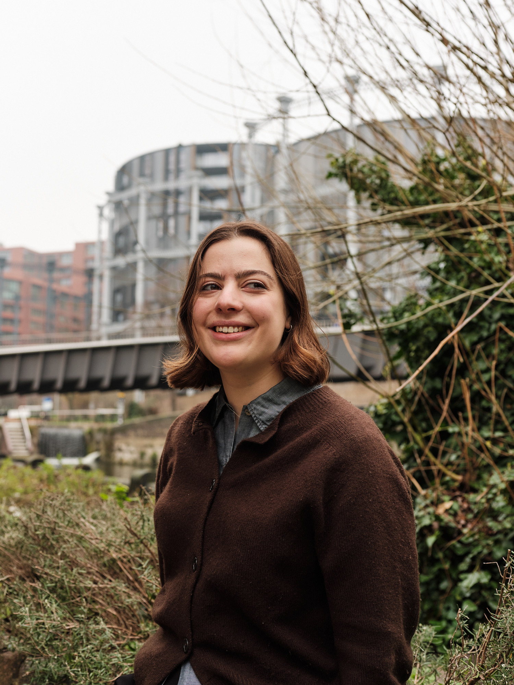

Beatrice Barr
Crossword Constructor
Bea is a crossword constructor based in East London. She makes US-style puzzles for a UK audience: lots of white squares, no NBA references.
Her puzzles have been published in magazines including Vittles, Translator and The Observer, for whom she constructs bi-monthly. She started out making weekly puzzles for her university paper, Cherwell, as an undergraduate.
She particularly enjoys making themed crosswords for print magazines and incorporating British cultural references into an American medium. Her Vittles puzzle, on London food and restaurants, is her magnum opus.
Day-to-day, she works in strategic communications for good causes.